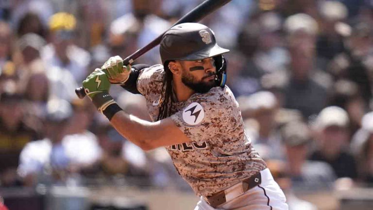

Eres Tatis Junior, el mejor jugador de los Padres de San Diego. En este momento estas en la parte baja
del
noveno inning, con tu equipo perdiendo por un punto. Tienes un conteo de 2 bolas y 2 strikes. El
estadio
esta lleno, y
tu equipo esta dependiendo de ti para ganar el juego.

Tatis Junior listo para batear
Antes de que el pitcher lance, respiras profundamente para calmar tus nervios, te preparas para batear y
observas el lanzamiento del pitcher